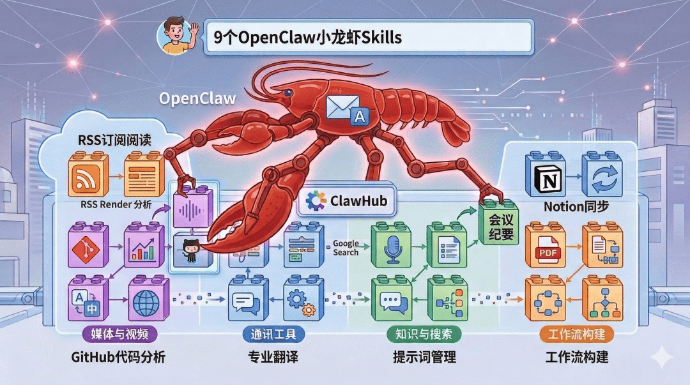

哈喽大家好，我是可乐！上一篇文章中我们介绍了 OpenClaw小龙虾的Skills，这篇来记录一下我常用的9个Skills。
当我的小龙虾有了这9个技能后，效率有了大大的提升，可以实打实的感受到AI动起来干活了。

下面列一下这9个Skills，有需要的话可以做一个参考。在ClawHub中搜索名字选择下载量大的Skills即可。
1. RSS Reader（RSS订阅阅读）
如果你平时需要关注很多网站、博客或者行业资讯，这个技能会非常方便。它可以自动抓取RSS源并总结最新内容，让AI每天帮你生成信息简报。
适合用户：
行业研究、信息跟踪、自媒体作者
2. Email Assistant（邮件助手）
这个技能可以帮助AI读取邮件内容、自动总结邮件重点，甚至可以帮你生成回复草稿。
适合场景：
商务沟通、客户邮件处理、日常办公
3. Notion Sync（Notion同步）
如果你使用Notion做知识管理，这个技能可以让OpenClaw直接读取或更新Notion内容。
适合场景：
知识库管理、项目记录、AI辅助写作
4. GitHub Analyzer（GitHub代码分析）
这个技能可以读取GitHub仓库并分析代码结构，例如总结项目功能、解释代码逻辑等。
适合用户：
开发者、技术研究人员
5. Meeting Summary（会议纪要）
如果你经常开会，这个技能可以把会议记录自动整理成结构化纪要，包括行动项和重点结论。
适合场景：
团队会议、项目讨论、工作复盘
6. PDF Extractor（PDF信息提取）
虽然File技能也能读取PDF，但这个技能专门优化了 PDF结构提取 ，例如表格、章节标题等。
适合场景：
学术论文、行业报告、政策文件分析
7. Translation Pro（专业翻译）
这个技能在普通翻译基础上增加了专业术语识别 ，非常适合技术文档或商业文档翻译。
适合场景：
技术资料、跨语言沟通、国际项目
8. Prompt Library（提示词管理）
如果你经常使用AI工具，这个技能可以帮助你管理和分类各种提示词模板。
适合用户：
AI重度用户、内容创作者、AI开发者
9. Workflow Builder（工作流构建）
这个技能可以把多个Skills串联成自动化流程，例如：
抓取新闻 → 总结 → 自媒体平台文章
这个技能可以连续的执行，使用这个需要根据自己的使用场景来构建好流程。
适合场景：
内容生产、自动化办公、AI流程管理
Skills用的好可以极大的提升小龙虾的工作的效率，会让你的小龙虾用起来智能程度很高，就像一个真正的私人助理，随时可以响应你分配的任务。
今天的文章就到这里了，后续会继续分享小龙虾相关的内容，如果有问题，可以随时交流。